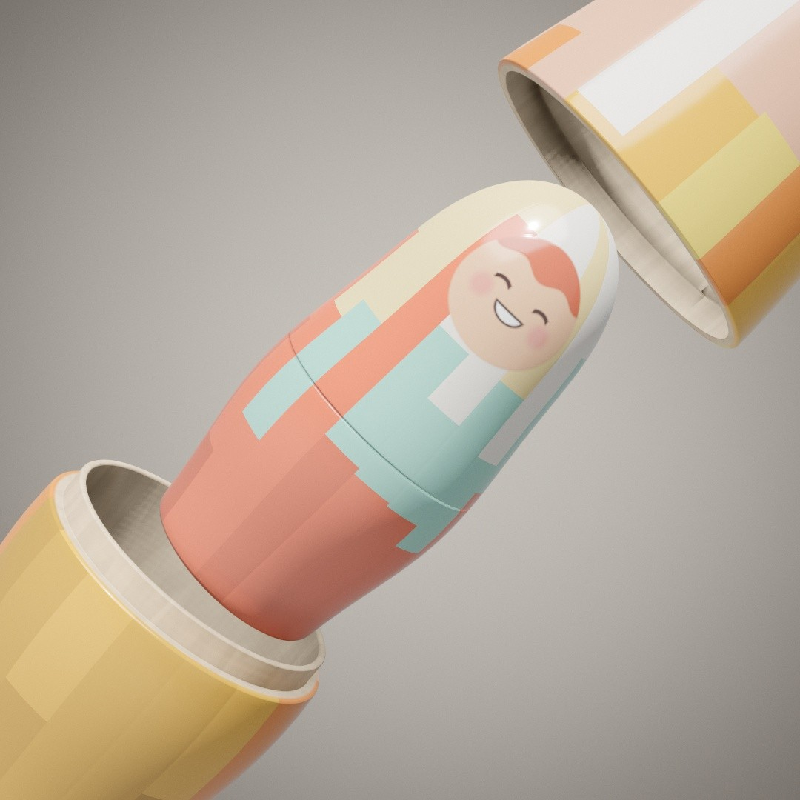

How Nest opens
A painted wooden doll unscrews, its halves drift away, and the doll inside grows into its place and starts to unscrew too. It never ends. Here is how each doll is turned on a virtual lathe, how the zoom goes on forever without the numbers running away, how an opening is timed to the sound of a real wooden box, how fifteen families of designs are painted pixel by pixel, and how the faces keep finding the camera.
See it live
A doll inside a doll, forever
A matryoshka is a promise you can only keep a few times: open the doll and there is a smaller one, open that and there is another, until the last one is solid. The prompt for the day was Nest, so the obvious thing to do was to break the promise the other way and never reach the last one. Every doll here is hollow and every doll has a doll inside it.
The dolls are not the traditional red babushkas. They follow the modern ones that designers and makers have been painting for the last fifteen years: colour-dipped raw wood, Bauhaus blocks, paint drips, harlequin triangles, city stripes, black-and-white graphics, a single red balloon (the makers are credited at the end). Each doll is meant to look like a product shot of a real object, turned from linden and lacquered or glazed, so the wood shows wherever a real one would: inside, on the lip, on the base.
N opens the next one sooner.e0.35 = 1.42, however long it runs.Turned on a lathe
A matryoshka is turned: a block of wood spins and a chisel cuts its silhouette, so every doll is a surface of revolution. In three.js that is a LatheGeometry, which spins a list of (radius, height) points around the vertical axis in 96 steps (64 on the low quality tier). All the work is in the list of points.
The silhouette is one smooth formula per shape, the radius r(h) at a height h from 0 at the base to 1 at the crown. Each is a base radius plus a few Gaussian bumps (a belly, a waist, a head) multiplied by a dome factor √(1 − h⁸) that is almost 1 all the way up and closes the top into a round crown with a vertical tangent, so there is never a point or a seam at the top:
A real doll opens at the waist, so each doll is two meshes, split at 43% of its height. Both halves are hollow, with walls 0.056 thick (2.5% of the height) and a base 0.075 thick. The bottom cup has a rabbet lip: a ring 0.088 tall that stands up out of the cup, stepped in 0.034 from the outer wall, and the top cap has a matching recess cut into it with 0.0025 of clearance, which is what holds a real doll shut. The lip is placed inside the narrowest radius the cap reaches along the lip's height, so it never pokes through the cap's waist on the pinched shapes. Both rims have a three-step rounded chamfer of 0.0085 so the seam catches a highlight, and the bottom edge has a small chamfer too.
Each point carries two numbers into the shader as vertex attributes. aPart is 0 on the painted outside and 1 on everything a turner would leave raw: the rims, the lip, the inside walls, the inner floor and the underside. aCavity runs from 0 at the rim to about 0.96 at the bottom of the hollow, and darkens the inside as a real cavity is darker (the albedo by up to 58%, the occlusion by up to 35%), which ambient occlusion alone underestimates on a thin wall seen from outside. The lathe's seam, where the first and last column of vertices meet, is turned to the back of the doll, so the face side is seamless.
The cross-section
The same point lists as geometry.js, cut in half: painted outside in colour, raw wood in brown, the cap lifted a little so the lip and the recess show. The dashed doll is the next one, at e−0.35 = 0.705 of the size and centred on the same point.
The origin of each doll is not its base but a point 48% of the way up, inside the hollow. That is what makes nesting simple: every doll is centred on the same point and the next one is just the same mesh at 0.705 of the scale, which leaves 0.02 to 0.08 of air between it and its mother's wall (tightest when a Pear sits inside a Classic, whose waist pinches in), 0.24 below it and 0.28 above it under the cap's dome. Nothing has to be placed; the dolls nest by construction.
A zoom that never overflows
The obvious way to zoom into nested dolls forever is to keep shrinking the camera, or keep growing the dolls, and both run out: after a few hundred dolls the numbers are too small or too large for 32-bit floats and the picture falls apart. The trick, borrowed from infinite-gift, is to move the zoom into a single number that wraps around.
The state of the whole nest is one number, u. Its integer part says which doll is opening, its fractional part how far along. Each doll g sees the nest from its own point of view as p = u − g: 0 when it is closed in the hero spot, between 0 and 1 while it opens, negative while it is still inside its mother. Its size on screen must be e0.35·p, so it is 1 in the hero spot, 0.705 inside its mother and 1.42 as it finishes opening. That is split into two factors that both stay small:
When u crosses an integer the fractional part wraps from 1 back to 0, the root drops from 1.42 back to 1, and every slot moves up one offset, which multiplies it by exactly 1.42: nothing on screen changes. Four slots are enough: the doll that just finished opening (still fading out until p = 1.05), the one opening, the one inside it and the one inside that, which is hidden until its mother starts to open (p ≤ −1 is never drawn). Slot g mod 4 holds doll g; when a slot is handed a new doll, it is given that doll's design, shape and material and keeps its two meshes. Nothing is ever created or destroyed while it runs.
Four slots and one number
Each column is a slot. The silhouettes are drawn at their world size e0.35·p; the readout shows the root's own scale, which never leaves 1 … 1.42. Play it and watch the slot numbers rotate under constant sizes.
u moves at the Speed slider, 0.24 a second by default (a doll every 4.2 s), times the time step, so pausing stops it. A click or N asks for the next integer: the gap is added to a bonus that u eats at 1 − e−4.2·dt a frame, so the doll opens quickly but smoothly. Several clicks stack. With Direction set to Close it all runs backwards: the halves come back, seat and close, and the nest shrinks forever instead.
Unscrew, then let go
An opening is a function of p alone, so it plays the same at any speed and backwards. It has two overlapping movements. First the halves unscrew: they turn in opposite directions by 50° to 100°, shared unevenly between them as a hand would (each doll draws its own amounts from hashes of the seed and its number), and up to 55° more as they part. They lift just enough to clear the lip, 0.06 for the cap and 0.02 for the cup. The twist follows tw = 1 − e−1.6·p / 0.26: fast at first, as a stuck lid breaks free, and 80% done by p = 0.26 (about 1.1 s at the default speed, the length of the opening sound), slowing but never stopping.
Then they part. The separation s starts from rest at 0.55 × 0.26 = 0.143, before the twist is done, and is eased in with s2(2 − s), whose slope is 0 at the start and 1 at the end. Because the twist never stops and the separation starts from rest before it, nothing in the opening ever comes to a halt and starts again.
Each half lifts along the doll's axis first (the radial term grows as s2.7 to 3.4, so it barely moves sideways until it is clear of the doll inside), then drifts sideways and tips over, pitching away from the doll as if peeled off by a hand, with a little bank. Both peel behind the doll: their directions are 20° to 49° either side of straight back (the face is at the front), one half to each side, so a half never swings toward the camera. In the doll's own frame the cap ends up about 2.7 above the doll and 3.7 out to the back, and the nest has grown 1.42 times by then, so both halves have left the frame.
One opening
Left, the curves of one doll (all hashes at 0.5): twist, separation, the cap's lift (scaled to fit), the fade into the backdrop and the strength of its shadow. Right, a side view in the doll's frame as the nest grows: the cap goes up and away, the cup down and away, the next doll grows into the hero spot.
The halves do not just leave the frame, they dissolve. The material blends its lit colour into the backdrop's own colour as smoothstep(0.48, 0.98, s) (albedo, metal, specular and sheen fade out, the emission fades in to exactly what the backdrop shows at that pixel), and over the last 15% it discards pixels in an interleaved-gradient-noise dither, which the pipeline's anti-aliasing and accumulation turn into a smooth fade. A half that has dissolved has no edge to pop.
The pipeline fits its shadow map around everything that casts, so halves flying 4 units away would spread the map thin over the hero, and they stop casting as they leave. To fade their shadows rather than cut them, the halves use the pipeline's stochastic shadows: in the shadow pass their alpha is the chance of blocking the light, 1 − smoothstep(0.31, 0.6, p), redrawn every frame and smoothed by the shadow denoiser, so the shadow fades out, and only at p = 0.62, with nothing left to see, are they dropped from casting and from the fit. The painted hairline at the waist also fades as the halves part, clamp(0.25·tw + 5·s), so a closed doll shows a fine seam and an open one shows two clean rims.
Fifteen families of five
Real sets are designed together, so the dolls come in families of five. Siblings share a pattern, a finish (matte wood, glossy lacquer, glazed ceramic, raw and dipped, or satin with brass), a silhouette, a palette and the backdrop behind them; each sibling gets its own colourway from the palette and its own face. When a family has been seen, the next one starts inside its smallest doll. A doll's design is a pure function of its number and the seed, getDollSpec(g, seed), so the same seed always plays the same dolls and any doll can be built at any time.
The order of the families is a shuffle of all fifteen, seeded by the seed and the cycle (how many times all fifteen have been seen), so each plays once before any repeats. After the first cycle they vary: every palette is shifted in hue by the golden ratio's fraction (0.382 a cycle plus up to 0.18 at random, with a little saturation and lightness), finishes rotate between matte, lacquer and ceramic, and the silhouette rotates between Nordic, Classic and Pear. Whites, blacks, skin and wood never shift, so the faces always look right.
| family | pattern | finish | shape | faces |
|---|---|---|---|---|
| Bauhaus Ceramic | discs, quarter circles and blocks split at the waist; five fixed compositions | glazed ceramic | Nordic | minimal |
| Pastel Drip | paint dripped over white, alternating round drips | glossy lacquer | Pear | emoji |
| Terracotta Folk | botanical: tulips, leaves, daisies, raised gold dots | matte wood | Classic | emoji |
| Prism Mosaic | triangular tessellation aligned to the waist | matte wood | Nordic | emoji |
| Dipped Studio | raw wood with a dipped coat and a brass ring | raw & dipped | Nordic | emoji |
| Jewel Patchwork | colour-blocked curves around the face | glossy lacquer | Pear | emoji |
| City Skyline | staggered vertical colour bars | glossy lacquer | Nordic | emoji |
| Folk Graphic | chevrons, herringbone, bands, bevelled paint edges | glossy lacquer | Classic | emoji |
| Monochrome Lacquer | five black-and-white siblings: scallops, dots, clouds, harlequin | glossy lacquer | Pear | emoji |
| Porcelain Shawl | pastel hood parting over a floral apron | glossy lacquer | Classic | emoji |
| Crimson Babushka | headscarf tied in a V-notched bow | glossy lacquer | Classic | emoji |
| Balloon | white porcelain, one red balloon on a wavy string | glossy lacquer | Pear | none |
| Gel Overlap | translucent overprinted colour gels | glossy lacquer | Nordic | emoji |
| Modern Folk | navy cloak, coral hood, floral emblem apron | glossy lacquer | Classic | emoji |
| Scandi Emblem | collar tabs, buttoned chest, colour-block skirt | glazed ceramic | Pear | emoji |
The panel can pin any of it: a pattern, finish, palette, face style, shape or backdrop overrides the family's choice for every doll. R asks for new dolls without breaking the ones on screen: the whole doll in the middle, with the ones inside it, spins one turn about its axis (0.9 s, eased in and out) while the halves already flying off keep their course, and a new seed applies from the first doll that can't be seen, the one inside the hero until the hero starts opening and the one inside that after, so the new designs arrive at the next opening. The page keeps a short list of these seed changes, so the dolls behind keep their paint. Seeds are strings in the url, hashed to a 32-bit integer for the doll hashes.
Painted per pixel
There are no textures. Every pattern, face, wood grain and gold dot is computed in the fragment shader from the point's height h on the doll and its angle θ = atan(x, z) around it (0 at the face), as signed distance functions: circles, rounded boxes, segments, vesica leaves, smooth minimums for paint drips. A distance becomes paint with an analytic anti-aliased edge, so a pattern stays crisp at any size, which matters when the dolls are 0.7× one moment and 1.4× the next and the camera can come close.
Each pattern also writes a tiny height for the paint, a few ten-thousandths of a unit at an edge, which the shader turns into a bumped normal with the surface-gradient method (screen-space derivatives of position and height). Lacquer catches that height as a rim of highlight along every painted edge, which is most of what makes the paint look like paint. The finish then sets roughness and specular: matte wood 0.66 with the grain's ring and pore texture showing through, glossy lacquer 0.13 with a 1.5× specular, glazed ceramic 0.27 with kiln specks, raw-and-dipped mixing 0.36 on the paint with 0.75 on the bare wood, and brass inlays that become metal with a brushed roughness. The raw wood is linden: warped rings, pores stretched along the grain and lathe grooves 230 to the unit.
A face, as the shader paints it
The face medallion of evalFace() in the (θ, h) plane: a disc of radius 0.268, a hair cap, arcs for eyes and mouth, soft blush. Each shape is a distance; the edge width is the AA width. At the default 0.0018 the edges are crisp; drag it up to see the same distances drawn soft.
The faces are the day's own, painted over every design: eight emoji-like expressions (happy, wink, surprised, serene, smirk, grin, curious, bliss), handed to the five siblings in turn from a random start, plus a minimal Bauhaus face and none for the balloon. Hair is styled per family: scalloped bangs on the drip, botanical, city and shawl dolls, a side part on the dipped ones, curtain bangs on Gel Overlap, Modern Folk and Scandi Emblem, a sleek cap elsewhere, and an ink ring around the face on Folk Graphic.
The edge width is measured once per pixel, before any branch, from the surface itself: gAA = max(|fwidth(position)|, 0.0018), since the face and pattern coordinates are close to object units. Every edge in every pattern and face uses it, so no screen-space derivative sits inside a branch that depends on the pixel (which would make the shader compiler flatten the branch). The bump's derivatives are taken once at the very end, outside the wood/paint branch, for the same reason.
One program per pattern
Each pattern is its own small shader program: the material is created with #define DOLL_PATTERN n, and a chain of #if blocks keeps only that pattern's painting. The face is still a runtime choice (a uniform), since siblings change expression every doll. The shadow, depth and prepass variants of the material return before any painting and keep only the dithered discard of a fading half.
Each of the four slots keeps one material per pattern it has shown and swaps between them when a new doll is assigned to it; three.js shares the compiled program between slots, so a pattern is compiled once. At load only the patterns on screen are compiled. The rest are compiled in the background after the first frame, one at a time with KHR_parallel_shader_compile, in the order the nest will need them: the families nearest the current doll first, alternating ahead and behind.
Faces that find the camera
The camera never stops: it orbits at 0.68 rad/s, swings over and under, and rolls. The shared orbit controls lock at the poles, so this day uses the shared gimbal-free ones (modules/FreeOrbitControls.js, as days 14 and 16 do): yaw turns about the camera's own up vector and pitch about its own right vector, and the up vector turns with them, so the camera can go over the top and come back upside down. The automatic motion is applied the same way, as small turns of the camera's frame each frame: a yaw of 1.05 · orbit · dt, a pitch that swings with cos(0.55·phase), and a roll of 0.72 · roll · dt rotating the up vector about the view direction.
A free camera spends a lot of time looking at a doll's back or its base, and a matryoshka is about its face. So the dolls turn to meet it. Each doll is only slightly turned from its mother (up to ±0.35 rad), and the whole nest is turned as one: every frame, the camera's direction is expressed in the hero doll's frame, as an azimuth from the face and an elevation from the equator, and squeezed into a window in front of the face with tanh. The nest then turns, at 1 − e−2.5·dt a frame, toward the rotation that would put the camera at the squeezed direction.
The face window
Left, the azimuth map: where the camera is relative to the face (x) and where the nest turns to put it (y). Right, a top view of the doll with the window and the camera where the orbit's push balances the nest's pull: the steady state of the two rates.
With tanh the window has no hard edge: inside the window the correction is tiny and grows smoothly outside it, so the nest is always being turned a little. The hero's turn is blended from one doll's to the next over the reveal, between p = 0.26 and 0.7, so the hand-off is a small, smooth turn too. With the default orbit the camera settles about 40° off the face, inside the window's soft edge, and never below the equator, where it would look up into the base.
A studio with no floor
The dolls are rendered with the shared photographic pipeline: PCSS soft shadows, ambient occlusion and one bounce of indirect light, MSAA, a little bloom (0.025), AgX tonemapping at an exposure of 1.06, a vignette of 0.18 and fine grain. The light is a procedural studio: a large soft key from the upper left and front (direction −0.55, 0.92, 0.58, intensity 8.8, size 0.52), fill 0.48, a floor bounce of 0.38 and walls of 0.56, which is what gives lacquer its long window highlights.
The dolls float, so the background is a sphere of radius 36 around everything, seen from inside. It is pure emission: no diffuse and no specular, so no shadow, ambient occlusion or reflection can ever mark it. Its colour is the family's backdrop (warm plaster, soft gallery grey, deep charcoal, terracotta and others), eased to the next family's at 2.2/s, graded a little darker below and lighter above, with two octaves of noise at 1.5% and 0.8% like plaster, and lit like a spot behind the doll: 1.6× at the centre of the screen falling to 0.32× at the corners. The halves fade into exactly this colour, computed the same way in their own shader, which is why they can vanish anywhere on screen.
A wooden box, opening
Every opening plays the sound of a real one: six cuts from a CC0 recording of a small round hollow wooden box being handled, opened and closed, each 1.1 s, a quiet slide that builds to a release about 0.7 s in. Each plays at p = 0 crossing upward, a random variant never the same twice in a row, with ±7% of pitch and ±15% of gain. Closing (the nest running backwards) plays a lid closing from a second recording. The opening of the animation is timed to them: the twist takes about as long as the slide.
The wood goes through a gentle low-pass at 1.8 kHz (Q 0.5), which takes the scrape off and makes it sound like it comes from inside the hollow, then a compressor (−14 dB, 3:1). Under it a song loops at 0.3 gain, Melancholic Russian Folk Trip-Hop, generated with Lyria 3.5. The audio context is created on load and resumes on the first gesture, but nothing at all plays until the loader has finished: the first rendered frame calls sound.start().
Controls
- Drag to orbit, freely over and under; scroll or pinch to zoom. Click or tap (or N) to open the next doll sooner.
- Pattern, Finish, Palette, Faces, Shape and Backdrop pin a choice for every doll, or leave it to the family.
- Direction: open, or close and shrink forever. Speed: dolls a second (0.24 by default).
- Finish polish shifts every finish's roughness; Orbit and Roll set the camera's own motion.
- The nest never stops, so there is no auto change: a new doll opens every 4.2 s at the default speed.
- R for new dolls, M or the speaker button toggles sound, Space pauses, F goes fullscreen, Tab hides the panel, P saves a screenshot (Shift+P at 2×).